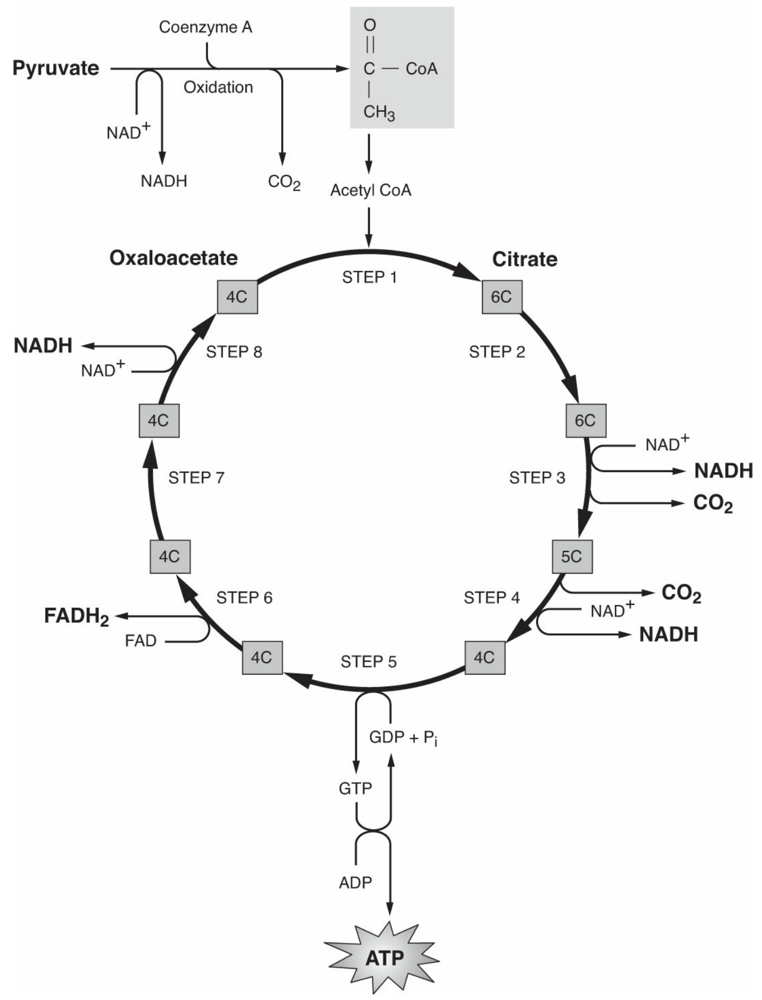
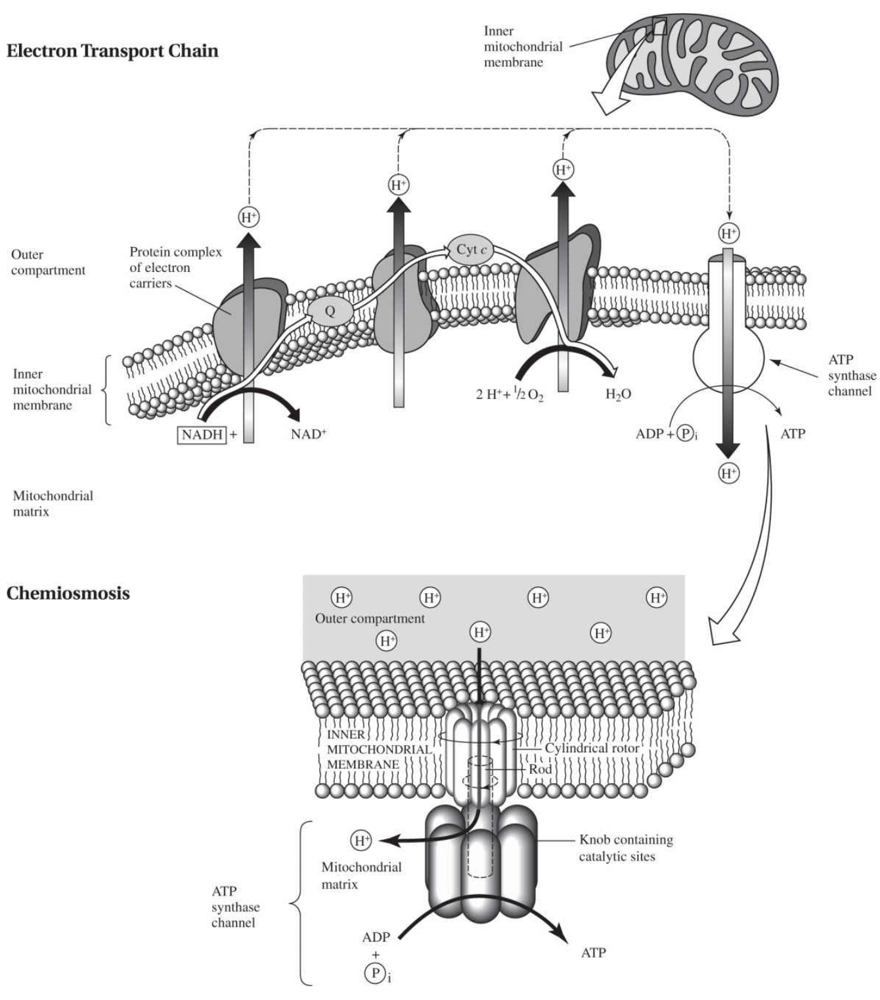
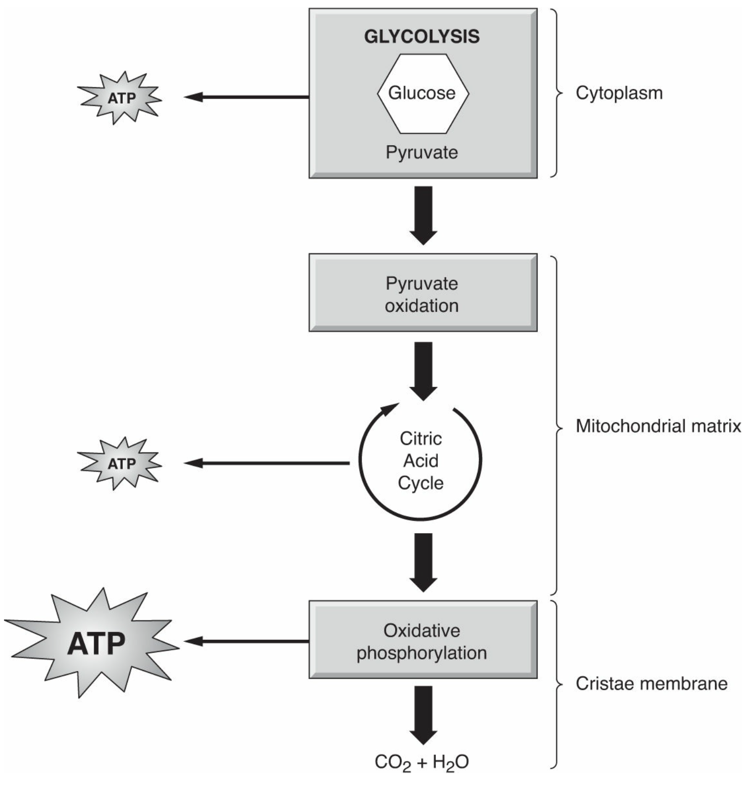
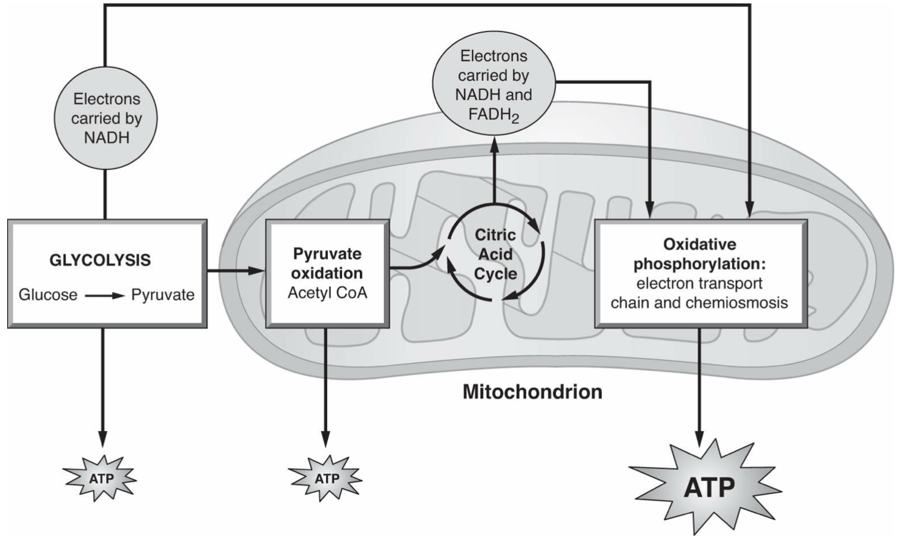

§3-subpage Cell Respiration
Chapter 6 Cell Respiration from Barron’s AP review
Redox reaction
Reduction reaction
the gain of electron or protons
GER: Gain electron reduction
Oxidation reaction
the loose of electrons or protons
LEO: Loss electron oxidation
ATP (Adenosine triphosphate)
Energy form that cell can directly utilize
Contains
An adenine
A ribose sugar
Three phosphate groups
Respiration
Aerobic cell respiration
With the present of oxygen
Cell respiration reaction:
$$ {\rm C_6H_{12}O_6+6O_2 \rightarrow6CO_2+6H_2O+energy}\{\rm free\ energy=\Delta G=-686kcal/mole}
$$
Glycolysis
A ten step process that breaks down 1 molecule of glucose into 2 pyruvate (three-carbon molecule) or pyruvic acid and release 4 molecules of ATP
The process require 2 ATPs to start, thus there is a net increase of 2 ATPs after one reaction
$$ \rm 2\ ATP+1\ Glucose \rightarrow 2\ Pyruvate +4\ ATP $$
Occurs in the cytoplasm and release ATP without oxygen
ATP is produced by substrate level phosphorylation (direct enzymatic transfer of a phosphate to ADP)
PFK (phosphofructokinase) is an allosteric enzyme that limit the concentration of ATP
Citric acid cycle (Kerbs cycle)
Occurs in the matrix of mitochondria and needs oxygen
Each glucose (glycolysis reaction) would turn the reaction twice
In the first step, acetyl-CoA combines with oxaloacetic acid (OAA or oxaloacetate) to produce citric acid, hence, the name citric acid cycle.
Before it enters the Krebs cycle, pyruvate must first combine with coenzyme A (a vitamin) to form acetyl-CoA, which does enter the Krebs cycle. The conversion of pyruvate to acetyl-CoA produces 2 molecules of NADH, 1 NADH for each pyruvate.
Each turn of the Krebs cycle releases 3 NADH, 1 ATP, 1 FADH, and the waste product CO2, which is exhaled.
During the Krebs cycle, ATP is produced by substrate level phosphorylation. Very little energy is released this way compared with the amount produced by oxidative phosphorylation.

Kerbs Cycle
NAD$^+$ and FAD
NAD and FAD are required for normal cell respiration.
NAD$^+$ (nicotinamide adenine dinucleotide) and FAD (flavin adenine dinucleotide) are coenzymes that carry protons or electrons from glycolysis and the citric acid cycle to the electron transport chain.
The enzyme NAD dehydrogenase or FAD dehydrogenase facilitates the transfer of hydrogen atoms from a substrate, such as glucose, to its coenzyme NAD$^+$.
Without NAD$^+$ to accept protons and electrons from glycolysis and the Krebs cycle, both processes would cease and the cell would die.
NAD and FAD are vitamin derivatives.
NAD$^+$ is the oxidized form. NAD$\rm _{re}$ or NADH is the reduced form. NADH carries 1 proton and 2 electrons.
FAD is the oxidized form. FAD$\rm _{re}$ or FADH$_2$ is the reduced form.
ETC (Electron transport chain)
ETC is a (series of) proton pump embedded in the mitochondria’s cristae membrane that couples a exergonic reaction and an endergonic reaction, which pumps proton out, establish a proton gradient, and ATP production during chemiosmosis.
There are thousands of copies of the ETC in every mitochondrion due to the extensive folding of the cristae membrane.
The ETC carries electrons delivered by NADH and FADH$_2$ from glycolysis and the Krebs cycle to oxygen, the final electron acceptor, through a series of redox reactions.
The highly electronegative oxygen pulls electrons through the electron transport chain. Electrons lose PE as they “fall down” the ETC toward oxygen.
NADH ****delivers its electrons to a higher energy level in the chain than does FADH$_2$. As a result, NADH provides more energy for ATP synthesis than does FADH$_2$. Theoretically, each NADH produces 3 ATP molecules, while each FADH2 produces 2 ATP molecules.
The ETC consists mostly of cytochromes. These are proteins structurally similar to hemoglobin. Cytochromes are present in all aerobes and are used to trace evolutionary relationships.
One component of the ETC is labeled Q, which stands for ubiquinone, or alternately coenzyme Q. Q is a mobile electron carrier. It diffuses within and along the membrane. If the cristae membrane were not fluid, Q could not move through it, and the ETC could not operate. This phenomenon is a great example of how the structure of a fluid membrane relates to its function.
The exergonic flow of electrons toward the highly electronegative oxygen provides the energy for the endergonic pumping of protons from the inner matrix to the outer compartment to create a gradient.
Oxidative phosphorylation
This energy-coupling mechanism, named chemiosmosis, uses the proton gradient to phosphorylate ADP to ATP
Energy flow
$$ \rm {\bf Glucose\rightarrow NAD_{re}}\ and\ {\bf FAD_{re}\rightarrow ETC\rightarrow Chemiosmosis\rightarrow ATP} $$
Summary

ETC and Chemiosmosis

The Aerobic Cell Respiration

Overview of Aerobic Cell Respiration
Anaerobic cell respiration
Anaerobic cell respiration is also known as fermentation
It is glycolysis + alcoholic fermentation or glycolysis + lactic acid fermentation
Alcoholic fermentation
Converts pyruvate into ethyl alcohol and carbon dioxide
Oxidize NADH back to NAD$^+$
Lactic acid fermentation
Reduce pyruvate to lactic acid (or lactate)
Oxidize NADH back to NAD$^+$
Human skeletal muscle may also carry out lactic acid fermentation